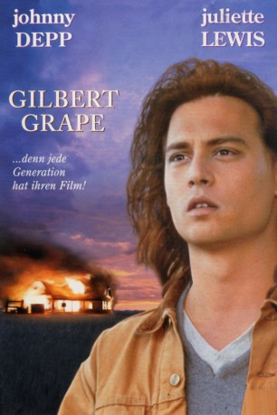
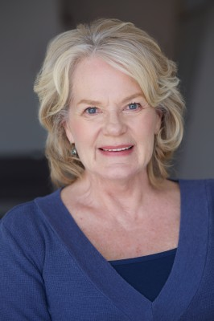
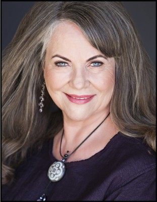

#2025 Gilbert Grape - Irgendwo in Iowa
Alternativ: What's Eating Gilbert Grape
Auszeichnungen: für 1 Oscars nominiert
 
 IMDB-Wertung: 7.8 / 10
IMDB-Wertung: 7.8 / 10  Metascore: 73
Metascore: 73 
Eine Kleinstadt, irgendwo in Iowa. Gilbert Grape träumt von Freiheit und der weiten Welt, lebt jedoch irgendwo und doch nirgendwo. Er träumt von Freiheit und der weiten Welt jenseits seines Horizonts. Gilbert hatte aber ein kleines Hindernis - seine Familie! Vater Grape hat Gilbert eine schwere Last hinterlassen, als er freiwillig aus dem Leben schied: 250 kg wiegt seine Mutter, die seit sieben Sommern weder Haus noch Sofa verlassen hat. Dann gibt's den 17jährigen, geistig behinderten Bruder Arnie, der Gilbert und die Ortspolizei ständig auf Trab hält, und die bei seiner Geburt prognostizierte Lebenserwartung schon um 250 Prozent überschritten hat - ohne absehbares Ende. Ganz zu schweigen von Gilberts zwei schwierigen Schwestern, die auch noch ernährt werden wollen. Erst als die junge Lebenskünstlerin Becky auftaucht, lernt Gilbert, daß nirgendwo irgendwo, und irgendwo überall ist...
Jahr: 1993
Dauer: 118 Minuten
FSK: 6
Land: USA Studio: Paramount PicturesTonspuren: DTS - ,
Untertitel: Deutsch,
Auflösung: 1080p (1920x1080) Größe: 10076 MB
Genre: Drama, Liebe
Regisseur: Lasse Hallström
Drehbuch: Peter Hedges, Peter Hedges
Soundtrack: Björn Isfält, Alan Parker
Darsteller:
 Johnny Depp als Gilbert Grape
Johnny Depp als Gilbert Grape Leonardo DiCaprio als Arnie Grape
Leonardo DiCaprio als Arnie Grape Juliette Lewis als Becky
Juliette Lewis als Becky Mary Steenburgen als Betty Carver
Mary Steenburgen als Betty Carver- Darlene Cates als Bonnie Grape
- Mary Kate Schellhardt als Ellen Grape
 Kevin Tighe als Ken Carver
Kevin Tighe als Ken Carver John C. Reilly als Tucker Van Dyke
John C. Reilly als Tucker Van Dyke Crispin Glover als Bobby McBurney
Crispin Glover als Bobby McBurney- Tim Green als Mr. Lamson
 Brady Coleman als Sheriff Jerry Farrel
Brady Coleman als Sheriff Jerry Farrel- Tim Simek als Deputy
-  Libby Villari als Waitress
 Joe Stevens als Burger Barn manager
Joe Stevens als Burger Barn manager-  Mona Lee Fultz als FoodLand Bakery Worker
- Peter Fernandez als Group
 Jason Pace als Group
Jason Pace als Group- David Stanford als Townsperson , uncredited
- Laura Harrington als Amy Grape
- Penelope Branning als Becky's Grandma
- Susan Loughran als Mrs. Lamson
- Robert B. Hedges als Minister
- Mark Jordan als Todd Carver
- Cameron Finley als Doug Carver
- Nicholas Stojanovich als Boy #1
- Kay Bower als Police secretary
- George Haynes als Dave
- Daniel Gullahorn als Boy #2
- David H. Kramer als Group
- Drew Ebersole als Group
- Paulette Rubinstein als Group
- Mary Griffin als Group
- Shelly Latham als Group
- Deborah Lee Johnson als Group
- Steve Cook als Group
- Patrick Welsh als Group
- Kirk Hunter als Townfolk , uncredited
- Buck Reynolds als Juvenile Heckler , uncredited
Datei: X:\1993\Gilbert Grape - Irgendwo in Iowa (1993, FSK6, 1920x1080).mkv seit 25.09.2015
Festplatte: HD 1992-1995
 Es gibt insgesamt 68 Filme in der Gruppe '1993'
Es gibt insgesamt 68 Filme in der Gruppe '1993'